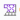

过程: 了解对称度 - 循环对称
“关闭窗口”(Close Window)
 “拭除未显示的”(Erase Not Displayed)
“拭除未显示的”(Erase Not Displayed) 
 Simulate_Modeling\Symmetry
Simulate_Modeling\Symmetry
 FLYWHEEL_3DSEGMENT_SIMULATE.PRT
FLYWHEEL_3DSEGMENT_SIMULATE.PRT
|
|
||
 |
Creo Parametric 用户打开 FLYWHEEL_3DSEGMENT.PRT | |
|
|
||
-
任务 1. 定义 2D 轴对称模型的材料。
1. 在功能区中，选择“主页”(Home) 选项卡。
2. 在“材料”(Material) 组中单击“材料”(Materials)
 。将出现“材料”(Materials) 对话框。
。将出现“材料”(Materials) 对话框。
3. 从材料列表中选择 steel.mtl，然后单击“添加材料”(Add Material)
 。
。
4. 单击“确定”(OK)。
5. 在“材料”(Material) 组中单击“材料分配”(Material Assignment)
 。将出现“材料分配”(Material Assignment) 对话框。
。将出现“材料分配”(Material Assignment) 对话框。
6. 校验“零件:FLYWHEEL_3DSEGMENT”(Part:FLYWHEEL_3DSEGMENT) 已在“参考”(References) 部分列出，并且 STEEL 作为材料在“属性”(Properties) 部分列出。
7. 单击“确定”(OK)。
-
任务 2. 定义循环对称和位移约束。
1. 在功能区中，选择“主页”(Home) 选项卡。
2. 单击“约束”(Constraints) 组下拉菜单，然后选择“对称”(Symmetry)
 。将出现“对称约束”(Symmetry Constraint) 对话框。
。将出现“对称约束”(Symmetry Constraint) 对话框。
3. 从“类型”(Type) 下拉菜单中选择“循环”(Cyclic)。
4. 在第一个“参考”(References) 字段中单击，并选择显示在模型上的曲面。

5. 在第二个“参考”(References) 字段中单击，并选择在模型上显示的曲面。
6. 单击“确定”(OK)。
7. 在功能区中，选择“主页”(Home) 选项卡。
8. 在“约束”(Constraints) 组中单击“位移”(Displacement)
 。将出现“约束”(Constraint) 对话框。
。将出现“约束”(Constraint) 对话框。
9. 在模型中，选择显示的曲面。
10. 在“坐标系”(Coordinate System) 部分中，选择“选定”(Selected)。
11. 在模型树中，展开“模拟特征”，然后单击 CS0。
12. 在“约束”(Constraint) 对话框的“R 平移”(R Translation) 字段中单击“自由平移”(Free Translation)
 。
。
13. 在“Theta 平移”(Theta Translation) 和“Z 平移”(Z Translation) 字段中单击“固定”(Fixed)
 。
。
这些约束使顶部曲面能够沿径向展开，但是不能沿着 CSO 参考的 Z 轴扭转或变形。
14. 单击“确定”(OK)。
-
任务 3. 定义 2D 轴对称模型的载荷集。
1. 在功能区中，选择“主页”(Home) 选项卡。
2. 在“载荷”(Loads) 组中单击“离心”(Centrifugal)
 。“离心载荷”(Centrifugal Load) 对话框随即出现。
。“离心载荷”(Centrifugal Load) 对话框随即出现。
3. 单击“新建”(New)。将出现“载荷集定义”(Load Set Definition) 对话框。
4. 在“名称”(Name) 字段中键入 RPM20000。
5. 单击“确定”(OK) 返回“离心载荷”(Centrifugal Load) 对话框。
6. 在“角速度”(Angular Velocity) 部分的 Y 字段中键入 20000。
7. 从“角速度”(Angular Velocity) 部分下拉菜单中选择 RPM。
8. 单击“确定”(OK)。
已经为值为 10,000 rad/sec2 的角加速度定义了第二个载荷集。
-
任务 4. 定义 AutoGEM 控制。
1. 在功能区中，选择“精细模型”(Refine Model) 选项卡。
2. 从 AutoGEM 组中的“AutoGEM 控制”(AutoGEM Control) 下拉菜单中单击“最大元素尺寸”(Maximum Element Size) 。将出现“最大元素尺寸控制”(Maximum Element Size Control) 对话框。
3. 在“参考”(References) 部分中，从下拉菜单中选择“分量”(Components)。
4. 在“元素尺寸”(Element Size) 字段中键入 30。
5. 单击“确定”(OK)。
已经为关键区域中的某些弯曲曲面定义了另一个 AutoGEM 控制。
-
任务 5. 定义并运行静态分析。
1. 在功能区中，选择“主页”(Home) 选项卡。
2. 在“运行”(Run) 组中单击“分析和研究”(Analyses and Studies)
 。将出现“分析和设计研究”(Analyses and Design Studies) 对话框。
。将出现“分析和设计研究”(Analyses and Design Studies) 对话框。
3. 单击“文件”(File) > “新建静态分析”(New Static)。将出现“静态分析定义”(Static Analysis Definition) 对话框。
4. 完成以下步骤：
- 在“名称”(Name) 字段中键入 flywheel_3Dsegment。
- 选择在“约束集/元件”(Constraint Set/Component) 和“载荷集/元件”(Load Set/Component) 部分中显示的约束集和载荷集。
- 单击“收敛”(Convergence) 选项卡，然后从“方法”(Method) 下拉菜单中单击“单通道自适应”(Single-Pass Adaptive)。
- 单击“高级控制”(Advanced Control)。“高级 SPA 收敛控制”(Advanced SPA Convergence Control) 对话框随即出现。完成以下步骤：
- 选择“使用高级控制”(Use Advanced Controls)。
- 在“最大应力误差目标”(Maximum Stress Error Target) 字段中键入 1。
- 在“局部应力误差目标”(Local Stress Error Target) 字段中键入 10。
- 不要为“局部应力误差”(Local Stress Error) 字段选择任何参考。
- 在“高级 SPA 收敛控制”(Advanced SPA Convergence Control) 对话框中，单击“确定”(OK) 以返回至“静态分析定义”(Static Analysis Definition) 对话框。
5. 单击“确定”(OK) 返回到“分析和设计研究”(Analyses and Design Studies) 对话框。
6. 单击“配置运行设置”(Configure Run Settings)
 。将出现“运行设置”(Run Settings) 对话框。
。将出现“运行设置”(Run Settings) 对话框。
7. 默认情况下，结果和临时输出目录被设置在工作目录中。两种分析都储存在此位置。单击“确定”(OK)。
8. 在“分析和设计研究”(Analyses and Design Studies) 对话框中选择 flywheel_3Dsegment，然后单击“开始运行”(Start Run)
 。单击“是”(Yes) 以运行交互诊断。
。单击“是”(Yes) 以运行交互诊断。
9. 分析完成后，单击“显示研究状况”(Display Study Status)
 查看汇总报告。
查看汇总报告。
10. 关闭所有对话框并返回到 Creo Simulate 窗口。
过程就此结束。